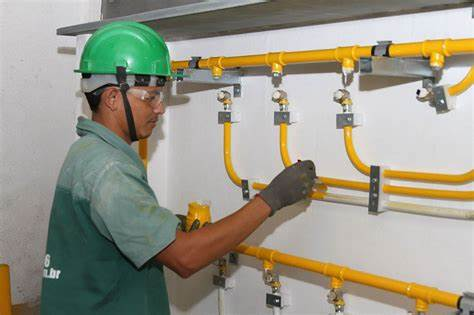

![]() 1
1
Serviço de instalação de Gás
Sua Segurança – Nossa Missão. Nossa missão é proporcionar soluções seguras e eficientes para o seu projeto e rede de gás. O gás é um produto inflamável que deve ser manuseado e instalado com todo o cuidado. Para tanto, observamos as normas para a instalação e manutenção do sistema de gás, dentre as quais destacamos a NBR 13.103, NBR 13.523, NBR 15.358 e NBR 15526. A atenção às normas de instalação de gás oferece a segurança que você tanto espera.
1
Fale conosco via Whatsapp